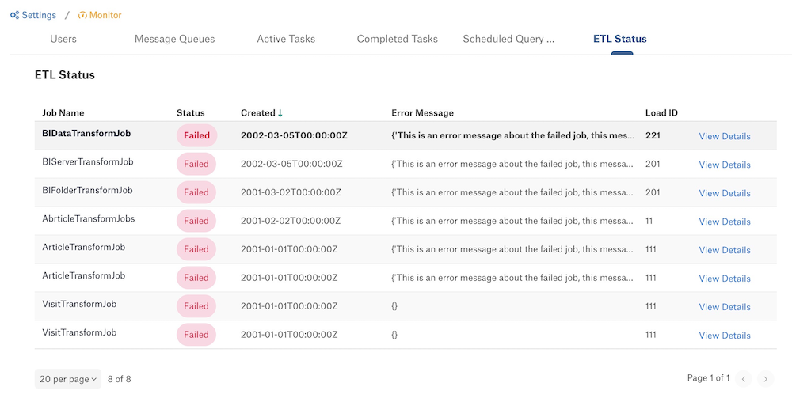

Maintain Alation Analytics V2¶
Alation Cloud Service Applies to Alation Cloud Service instances of Alation
Customer Managed Applies to customer-managed instances of Alation
Applies from version 2020.3
MDE, Profiling, and QLI¶
Metadata Extraction (MDE) runs automatically after every ETL.
Profiling can be performed if required using the standard steps for Profiling a data source.
QLI requires a separate setup. Use the steps for the PostgreSQL data source to set up QLI: A.7 Postgres QLI Setup.
Health Check Alerts¶
Applies to 2023.1 and later
Alation offers automated health checks that can help you monitor Alation Analytics V2. When health checks are enabled, Alation automatically checks to see if the RabbitMQ and Postgres components of Alation Analytics are running properly. You can check the health status in Alation by going to Admin Settings > Health Checks. If errors are found, Server Admins will get an email alerting them to the problem. See the following topics for more information:
Monitor ETL Status¶
Alation provides several ways to monitor the status of the Alation Analytics ETL process.
ETL Failure Email Notifications¶
Applies to 2023.1 and later
When Alation Analytics ETL is enabled, any RabbitMQ messages that couldn’t be processed are logged. These failures are automatically emailed to Server Admins every hour.
If there are more than three failures, only the first three will be included in the email. The email contains the failed message, the corresponding load ID (instance of failed message), and the Python error that occurred.
If you get an ETL error email, contact Alation Support for help.
Disable ETL Failure Emails¶
In 2023.1.4 and later, ETL error emails can be disabled.
Note
Alation Cloud Service customers can request server configuration changes through Alation Support.
To disable ETL error emails for on-premises installations of Alation:
Use SSH to connect to the Alation server.
Enter the Alation shell using the following command:
sudo /etc/init.d/alation shell
Disable ETL error emails:
alation_conf alation_analytics-v2.etl.notify_etl_failures -s false
Restart celery-beat:
alation_supervisor restart celery:celery-beat
Exit the Alation shell:
exit
ETL Pop-Up Alerts¶
Applies to 2023.1.4 and later
Alation can display a pop-up message to Server Admins on the Alation home page anytime an ETL failure occurs for Alation Analytics. This feature is disabled by default. See Enable ETL Alerts and Dashboard below.
When an alert message appears, you can click View Details to see more information about the failure.
The message can be dismissed by clicking the X on the right side of the message. Messages remain available in the ETL Status dashboard as described below.
ETL Status Dashboard¶
Applies to 2023.1.4 and later
Server Admins can see all Alation Analytics ETL failures in the ETL Status dashboard. This feature is disabled by default. See Enable ETL Alerts and Dashboard below.
To see the dashboard, go to Admin Settings, then in the Monitor section click ETL Status.
The dashboard shows only ETL failures, so if your ETL process is healthy, the dashboard will appear empty. If the dashboard shows any ETL failure messages, you can click View Details to see more information about the failure.
Enable ETL Alerts and Dashboard¶
The ETL pop-up alerts and status dashboard are disabled by default.
Note
Alation Cloud Service customers can request server configuration changes through Alation Support.
To enable them for on-premises installations of Alation:
Use SSH to connect to the Alation server.
Enter the Alation shell using the following command:
sudo /etc/init.d/alation shell
Enable ETL alerts and status dashboard:
alation_conf alation.feature_flags.DEV_enable_analytics_etl_failure_status_view -s true
Exit the Alation shell:
exit
Check the State of the Docker Containers¶
The components of the Alation Analytics V2 server run as Docker containers. Use sudo to run these commands.
To list all running Docker containers:
sudo docker ps
Example output:
sudo docker ps -a --format "{{.Names}}" transform_flag_job.FlagTransformJob transform_alation_set_member.AlationSetMemberTransformJob transform_catalog_set_member.AlationCatalogSetMemberTransformJob transform_tag_job.TagTransformJob transform_object_popularity_job.ObjectPopularityTransformJob transform_article_job.ArticleTransformJob transform_curation_history_job.CurationHistoryTransformJob transform_rdbms_job transform_columns_job.ColumnsTransformJob transform_visit_job.VisitTransformJob transform_time_period_job.TimePeriodTransformJob transform_conversation_job.ConversationTransformJob transform_compose_event_job.ComposeEventTransformJob transform_custom_glossary_job.CustomGlossaryTransformJob transform_custom_template_job.CustomTemplateTransformJob transform_user_job rabbitmq postgres
To list all Docker containers including those which failed and were stopped:
sudo docker ps -a
To do a full inspection of a container:
sudo docker inspect <container-name>
Container logs:
sudo docker logs <container-name> # Normal mode sudo docker logs -f <container-name> # Follow mode sudo docker logs --tail 10 <container-name> # Check only last 10 lines
Check the State of the Docker Daemon¶
If multiple containers are down, it could be due to the Docker daemon being stopped. First check the status of the Docker daemon, then restart it if needed.
Check the status of the Docker daemon
systemctl status docker
Restart the Docker daemon
systemctl restart docker
Start all containers together after restarting Docker daemon
cd /opt/alation-analytics # change to AA install directory /usr/local/bin/docker-compose up -d
Check Docker Container Users¶
Transform containers:
sudo docker exec -it transform_rdbms_job whoami
The RabbitMQ container:
sudo docker exec -it rabbitmq whoami
The Postgres container:
sudo docker exec -it postgres whoami
Docker Logs¶
If you wish to see all the logs at once you can use Docker Compose logs:
cd /opt/alation-analytics
sudo docker-compose logs
Depending on the system, the root user may not have Docker Compose on the profile. In this case, use the following commands to first get the full path to Docker Compose:
which docker-compose
/usr/local/bin/docker-compose # output of "which docker-compose"
# Then copy and use the full path
sudo /usr/local/bin/docker-compose logs
Stopping, Starting, Restarting Docker Containers¶
Stop container
sudo docker stop <container-name>
Start container
sudo docker start container-name
Restart container
sudo docker restart container-name
Stop all containers
sudo docker container stop $(docker container ls -aq)
Update Password for Alation Analytics V2 Database¶
An organization’s security policy may require that the database passwords should be changed at regular intervals. To update the password for the Alation Analytics V2 database, follow the steps in this section.
Note
Alation Cloud Service customers can request server configuration changes through Alation Support.
To update the password for the Alation Analytics V2 database:
On the host where Alation Analytics V2 is installed, use the
docker execcommand to enter the bash shell on the Postgres container.sudo docker exec -it postgres bash
To access Postgres, change to user
postgres.su postgresRun the
psqlcommand to enter the Postgres shell.psql
To change the password of the Postgres user, use ALTER ROLE.
postgres=# ALTER ROLE postgres WITH PASSWORD 'new_password';
Type
\qto exit the Postgres shell.postgres=# \q
Exit the bash shell and the
docker execcommand using theexitcommand.Perform this step on versions 2021.1 and newer. On versions older than 2021.1, skip this step.
Encrypt the password with the command given below. Substitute the placeholder values
<new_password>and<AA_install_dir>with your real values:echo <new_password> | openssl pkeyutl -encrypt -inkey <AA_install_dir>/config/keys/key.pem -pkeyopt rsa_padding_mode:oaep -pkeyopt rsa_oaep_md:sha256 | base64 -w 0
On all versions, edit the file /etc/default/alation-analytics.env and provide the new password — replace the value for
POSTGRES_PASSWORDwith the new password. You can use the vi editor or another editor of your choice. Save the updated file.sudo vi /etc/default/alation-analytics.env
Restart all the Docker containers to apply the new password.
# Change your directory to the Alation Analytics V2 installation directory cd /opt/alation-analytics # Stop all the Alation Analytics services sudo /usr/local/bin/docker-compose down # Start all the services in the background sudo /usr/local/bin/docker-compose up -d
Next, update the password in alation_conf. On the Alation catalog host, enter the Alation shell.
sudo /etc/init.d/alation shell
Change the user to
alation.sudo su alation
Using alation_conf, provide the new Alation Analytics database password to the Alation server.
alation_conf alation_analytics-v2.pgsql.password -s 'new_password'
Restart the
celerycomponent.alation_supervisor restart web:* celery:*
In the Alation catalog, go to the Alation Analytics V2 source settings > General Settings tab. In the Service Account section, change the password to your updated password and click the Test button to test the connection. This must be performed for the next MDE job to succeed.
Use Alation Analytics V2 Installer For Admin Functions¶
The Alation Analytics installer provides additional functions for administering the Alation Analytics V2 components. You can use the installer:
To view and modify the Alation Analytics database remote connection settings. By default, this database does not allow any remote connections. You can explicitly configure allowed connections using the installer.
To print the Alation Analytics V2 build version.
To check the Alation Analytics V2 component health.
Detailed instructions on how to use the installer are included in the README.md file of the Alation Analytics V2 package. The default location is at /opt/alation-analytics. Refer to the README file for information on how to use the installer with specific parameters.